Manage your production orders from start to finish.
POMGT connects customers, sales orders, materials, BOMs, routings, machines and operators so you can control and monitor all your production from a single device.
- Production ordersEvery status, every step.
- 2D plant mapMachines live.
- Operator displayProduction from a tablet.
- MetricsReal data and results.
One flow, from order to finished good.
Every piece of information connects to the next. Nothing is entered twice.

- CustomerRegister customers, contacts and terms.
- Sales orderCapture the order and its lines.
- Production orderWith its BOM and routing.
- Machines & operatorsStep by step, signed.
- Finished goodWith traceability and PDF.
Everything happening on your floor, visible and under control.
From the office, the plant monitor or the operator’s tablet.
The control center of your manufacturing.
Active production, scheduled, late and blocked orders, capacity used, completed output and alerts, all in real time.
- This week’s output against plan
- Status of every order
- Recent activity and due dates

Monitor your whole production area on a 2D map.
Each machine shows whether it is producing, queued, in setup, in maintenance or stopped, and which order and step it is working on.
- Automatic refresh
- Production flow between machines
- Rows-by-order view

Plan, run and close every order.
Quantity, progress, operations, materials, quality, costs and documents of every order, linked to its customer and sales order.
- List and Kanban views
- Progress per operation and machine
- Actual cost per order

Production displays for your operators.
From a tablet, the operator sees their step, verifies materials, logs output and signs to continue.
- No paper, no re-entry
- Materials verified before producing
- Signature per step

Every order, documented and signed.
The production order is generated as a PDF with its summary, manufacturing sequence, times, signatures and material consumption. And all your documents stay organized.
- Download, print and share
- Documents linked to orders and sales orders

Define what and how each product is made.
BOMs say which materials you need; routings say which steps and machines. Every order picks them up automatically.
Which materials each product needs.
Materials, subassemblies, consumables and packaging with quantity, unit, scrap and estimated cost. Versioned.
Explore BOMs
Which steps and machines each product follows.
Operation sequence with machine, setup, estimated time, expected scrap, yield and material types per step.
Explore routings
Whatever you make, the system shapes itself to YOUR production.
Create manufacturing routings for every product type you make, with your steps, your machines and your materials.

All your company’s production, in one place.

Production dashboard
KPIs, capacity, due dates and alerts in real time.
Explore the module
Production orders
Plan, run and close every order with traceability.
Explore the module
Plant floor map
Live 2D layout with every machine’s status.
Explore the module
Operator display
Step-by-step production from a tablet.
Explore the module
Documents & PDF orders
Signed PDF orders and organized files.
Explore the moduleManufacturing routings
Step sequence, machines and times per product.
Explore the module
Bills of materials
Which materials each product needs, with quantities and scrap.
Explore the module
Products & materials
Master catalog and materials inventory.
Explore the module
Customers & sales orders
Customer records and sales orders linked to production.
Explore the module

Plant monitor, operator tablets, your phone.

What you achieve with POMGT.
All production on one device
Monitor orders, machines and operators from a monitor, computer, tablet or phone.
Control of every status
Every order, in every process, on every machine, with every team member: you always know where it is.
Metrics & analytics
Output, capacity, attainment, scrap and real times to decide with data.
Plant visible in 2D
The plant map shows every machine’s status and the production flow live.
Paperless production
Operators log, verify materials and sign from a tablet.
Full traceability
Who did what, when and on which machine, with a signed PDF of every order.
Everything connected
Customers, orders, products, materials, BOMs, routings and orders in one place.
Adapts to your production
Whatever you make: your steps, your machines, your materials, your rules.
- 1 systemfor all production
- 9connected modules
- 100%traceability per order
- 9 splant map refresh
What people ask us most.
What is POMGT?
POMGT (Production Order Management) is a system to manage production orders end to end: from the customer’s order to the finished good, with real-time monitoring of machines, operators and metrics.
Does it fit my type of manufacturing?
Yes. You define your own products, materials, bills of materials and routings, so it works for auto parts, metalworking, packaging, furniture, food, plastics and more.
Do I need to install anything?
No. POMGT runs in the browser on computers, plant monitors, tablets and phones.
How long does onboarding take?
It depends on your catalog and plant size. We help you load materials, products, machines and routings so you start with your real operation.
All your production, in one place.
We show you POMGT with your own products, machines and routings. In one call you will see how your plant looks inside the system.